Virtual Display Setup
Important Since Sunshine is not preinstalled anymore you should read this doc to set it up first.
https://docs.bazzite.gg/Advanced/sunshine-brew/
Inspiration that made me do this:
https://gist.github.com/iamthenuggetman/6d0884954653940596d463a48b2f459c
Another way to create virtual Display
https://docs.bazzite.gg/Advanced/custom_resolution/?h=custom
Bazzite-custom-resolution-guide
Currently Works on Bazzite with KDE (Wayland)
Lenovo Ideapad
Operating System: Bazzite 43
KDE Plasma Version: 6.5.4
KDE Frameworks Version: 6.21.0
Qt Version: 6.10.1
Kernel Version: 6.17.7-ba22.fc43.x86_64 (64-bit)
Graphics Platform: Wayland
Processors: 16 × AMD Ryzen 7 5700U with Radeon Graphics
Memory: 12 GiB of RAM (9.5 GiB usable)
Graphics Processor: AMD Radeon Graphics
Manufacturer: LENOVO
Product Name: 82KU
System Version: IdeaPad 3 15ALC6
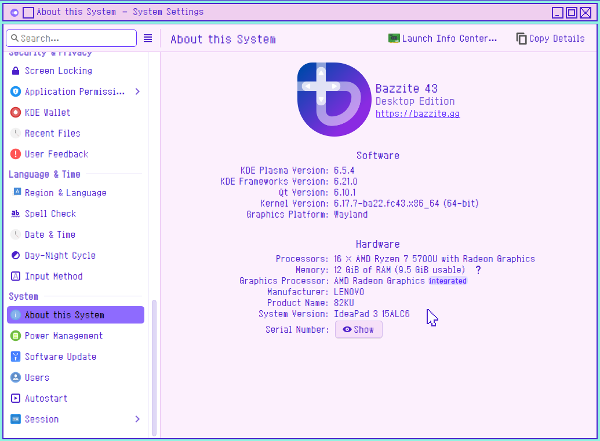
Asus TUF
Operating System: Bazzite 43
KDE Plasma Version: 6.5.4
KDE Frameworks Version: 6.21.0
Qt Version: 6.10.1
Kernel Version: 6.17.7-ba22.fc43.x86_64 (64-bit)
Graphics Platform: Wayland
Processors: 12 × 11th Gen Intel® Core™ i5-11400H @ 2.70GHz
Memory: 16 GiB of RAM (15.3 GiB usable)
Graphics Processor 1: Intel® UHD Graphics
Graphics Processor 2: NVIDIA GeForce RTX 2050
Manufacturer: ASUSTeK COMPUTER INC.
Product Name: ASUS TUF Gaming F15 FX506HF_FX506HF
System Version: 1.0
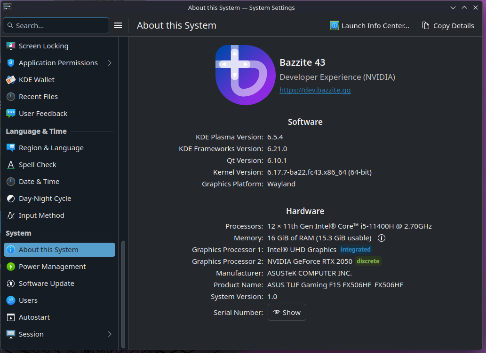
Automating Custom EDID + Virtual Display Setup (Bazzite / rpm-ostree)
You can trivialize steps 1–5 by using this script: VirtualDisplaySetup.sh
1. Obtain a Desired EDID Binary
Download an EDID from the LinuxTV repository:
https://git.linuxtv.org/v4l-utils.git/tree/utils/edid-decode/data
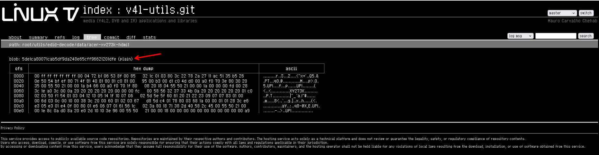
click these to download it
Pick an EDID matching your desired resolution and refresh rate.
2. Rename the EDID File
Rename the EDID file to anything ending with .bin, for example:
edid.bin
you can rename it to anything, but you must match it in the kernel arguments later.
3. Move the EDID File
Create the firmware directory:
sudo mkdir -p /usr/local/lib/firmware
Move the EDID file:
sudo mv ./edid.bin /usr/local/lib/firmware/
4. Add Kernel Arguments (rpm-ostree)
Check your Available Port by using this:
# Check Available Port
for p in /sys/class/drm/*/status; do
con=${p%/status}
port_name="${con#*/card?-}"
status=$(cat "$p")
echo "$port_name ($status)"
done
In my case the output is this:
awchan@bazzite:/var/home/awchan$ # Check Available Port
for p in /sys/class/drm/*/status; do
con=${p%/status}
port_name="${con#*/card?-}"
status=$(cat "$p")
echo "$port_name ($status)"
done
eDP-1 (connected)
HDMI-A-1 (connected)
Then with that result, Append the EDID firmware arguments:
sudo rpm-ostree kargs --append-if-missing="firmware_class.path=/usr/local/lib/firmware drm.edid_firmware=HDMI-A-1:edid.bin video=HDMI-A-1:e"
> replace HDMI-A-1 with your available disconnected port and edid.bin with your actual edid file name.
5. Reboot the System
systemctl reboot
6. Configure the Virtual Display
After logging back in:
- Right-click the desktop
- Open Display Configuration
- You should now see an additional display
- Adjust resolution / refresh rate as desired
Example:
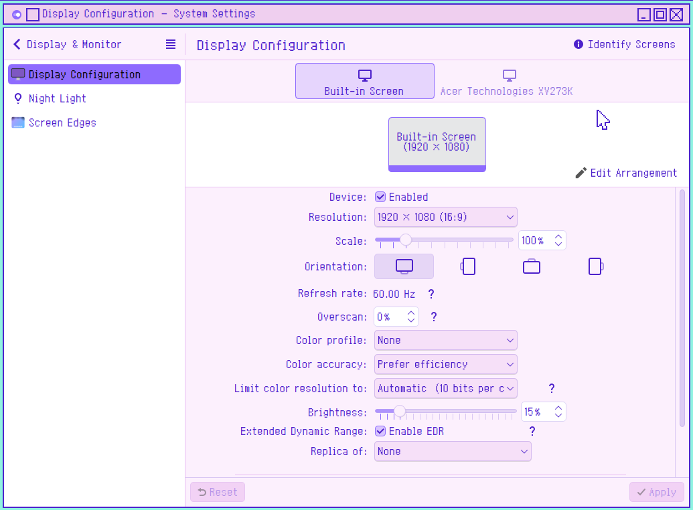
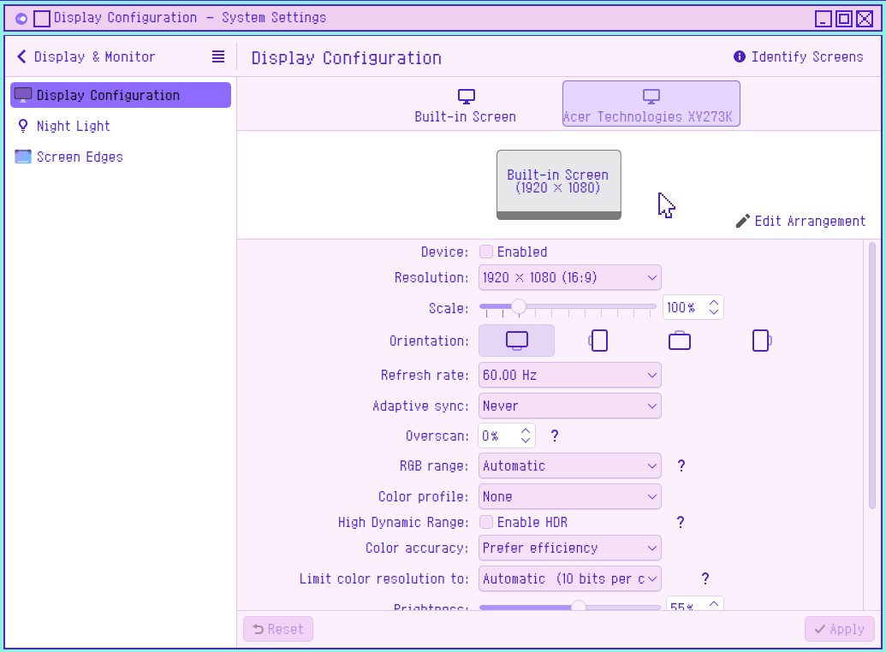
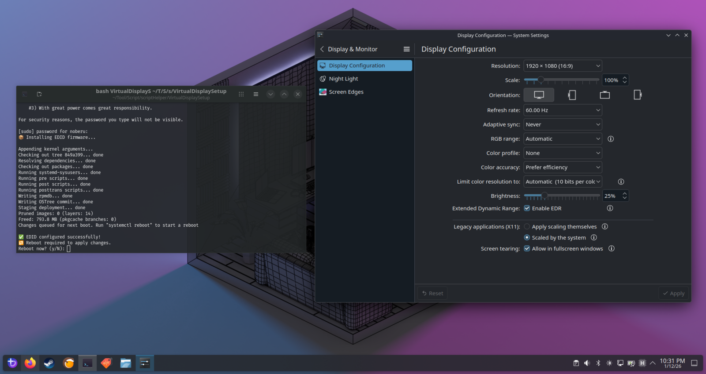
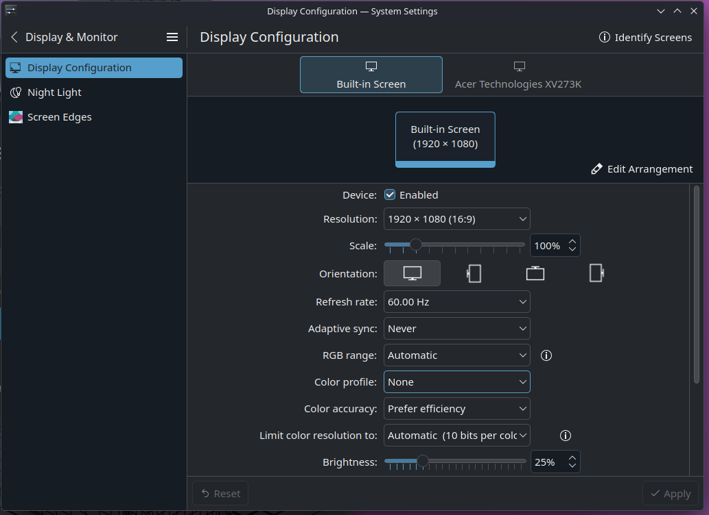
Sunshine Display Automation (Optional)
You can automate everything with:
This one is profile-specific basically if you want to fine tune it to the way you like it.
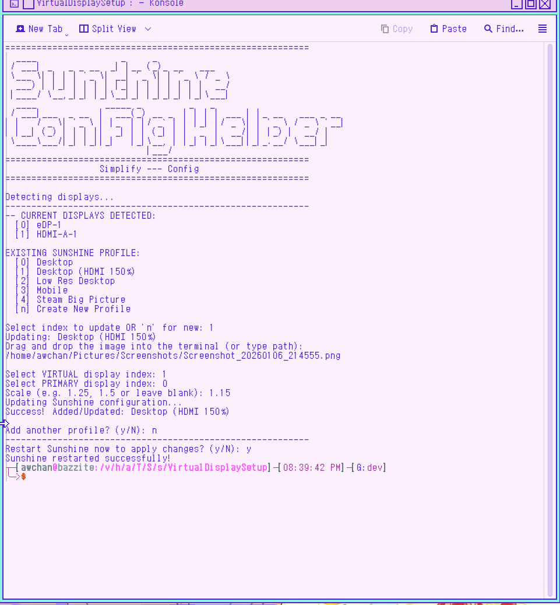
** MANUAL STEP **
7. Identify the Virtual Display Output ID
Well i am sure by now you should know what is your real and virtual screen for your setup already, so you can simply skip this part.
But just to be sure that kscreen-doctor recognize your screen.
Run:
kscreen-doctor -o | grep Output:
Example output:
┬─[awchan@bazzite:/v/h/awchan]─[11:11:01]
╰─>$ kscreen-doctor -o | grep Output:
Output: 1 eDP-1 f75dff9f-3bba-4153-964f-ad8f038f39ee
Output: 2 HDMI-A-1 b954dc05-3187-43d2-8f17-c2ca954169a6
8. Configure Sunshine Display Switching
These image is outdated and serve as reference only.
You should see Sunshine in the system tray.
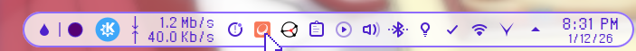
- Right-click the Sunshine tray icon
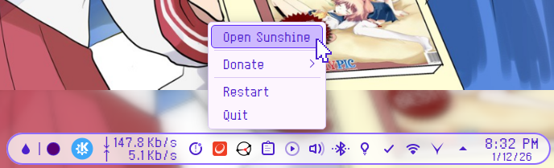
- Select Open Sunshine
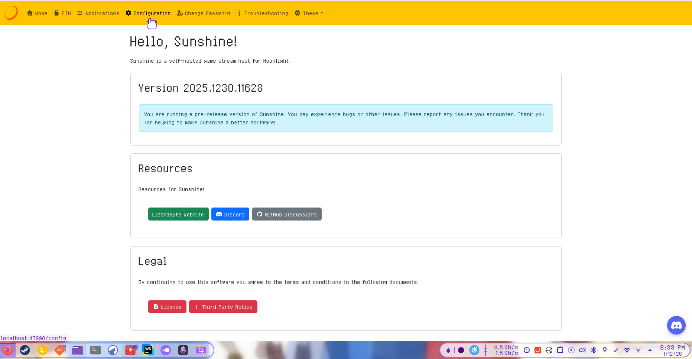
- Go to Configuration → General
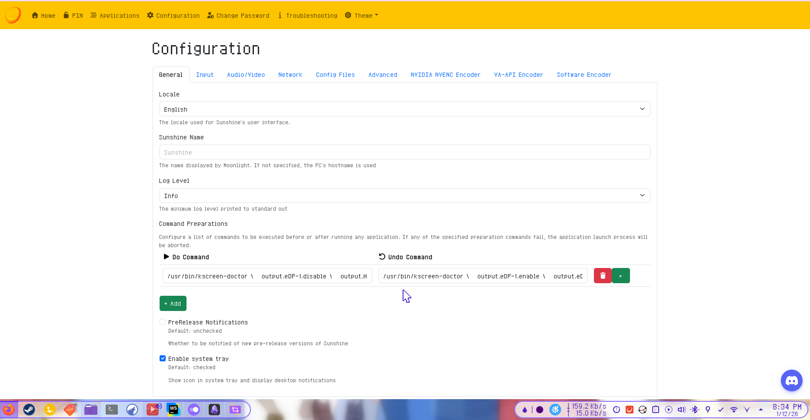
- Click + Add to create:
For my setup it is something like this:
- Do Command
/usr/bin/kscreen-doctor \ output.eDP-1.disable \ output.HDMI-A-1.enable \ output.HDMI-A-1.primary - Undo Command
/usr/bin/kscreen-doctor \ output.eDP-1.enable \ output.HDMI-A-1.disable \ output.eDP-1.primary
Steam Big Picture Mode
Create a script that Sunshine can execute as a single file.
OR just use this sunshine-undo-steam.sh
Adjust script location as you please
This is only an example for the file name and the location feel free to put it anywhere you want.
kate ~/sunshine-undo-steam.sh
copy this and paste it:
Again you should adjust this part.
# Restore display /usr/bin/kscreen-doctor \ output.eDP-1.enable \ output.HDMI-A-1.disable \ output.eDP-1.primary
#!/bin/bash
# Restore display
/usr/bin/kscreen-doctor \
output.eDP-1.enable \
output.HDMI-A-1.disable \
output.eDP-1.primary
# Small delay
sleep 0.5
# Close Steam Big Picture
steam steam://close/bigpicture >/dev/null 2>&1
sleep 2
xdotool search --onlyvisible --class "steam" windowminimize
Make it executable:
chmod +x ~/sunshine-undo-steam.sh
Then set Sunshine Undo Command for Steam Big Picture to:
~/sunshine-undo-steam.sh
Don't mind this image, i put mine in different location.
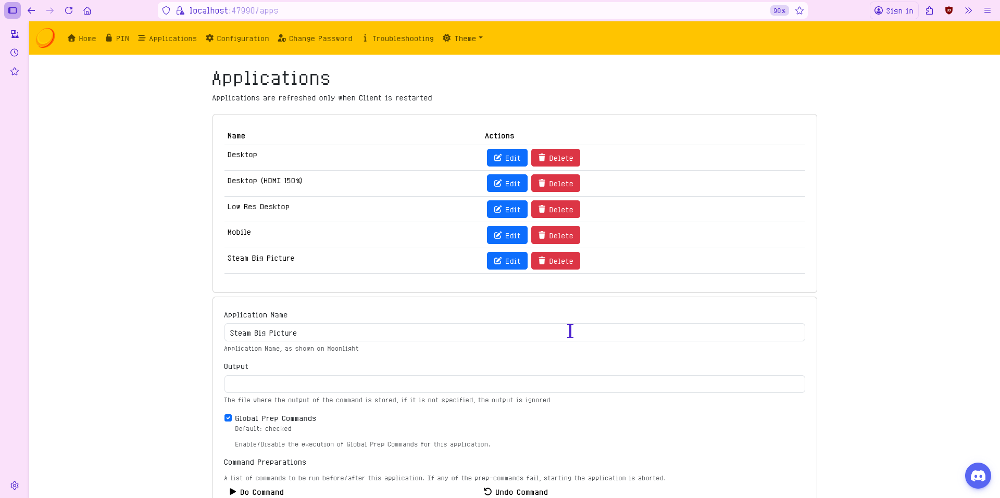
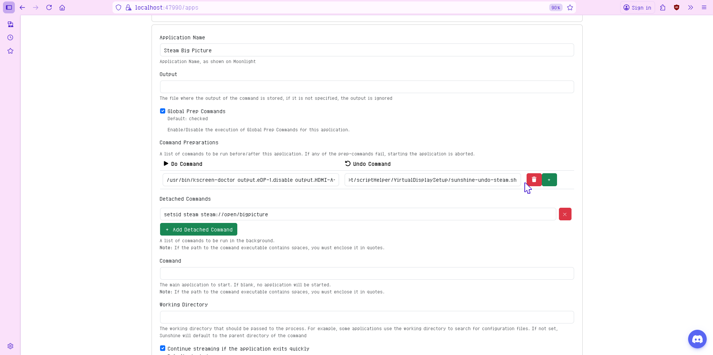
Client Recommendation
I recommend Artemis (Moonlight fork) for android due to better features and control otherwise just use moonlight if you don't want to bother with it.
Source:
https://github.com/ClassicOldSong/moonlight-android
Releases:
https://github.com/ClassicOldSong/moonlight-android/releases
ISSUE
Shutdown from remote access would result in black screen upon booting,
to solve it set this script as undo command if you wish or put in as command on kde connect by copying the content of the script as command.
RS.sh
#!/bin/bash
/usr/bin/kscreen-doctor \
output.eDP-1.enable \
output.HDMI-A-1.disable \
output.eDP-1.primary && shutdown now